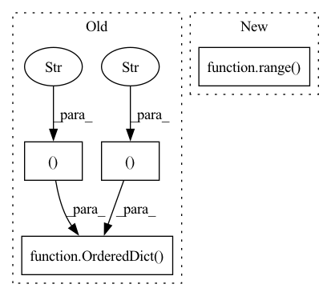

Pattern ID :5918
Before Change
norm="batch_norm", final_sigmoid=True):
super(Discriminator, self).__init__()
self.norm = norm
self.disc = nn.Sequential(OrderedDict( [
// input: N x channels_img x 64 x 64
("conv_in", nn.Conv2d(
channels_img, features_d, kernel_size=4,
stride=2, padding=1, bias=False
)),
("leaky_relu", nn.LeakyReLU(0.2)),
// _block(in_channels, out_channels, kernel_size, stride, padding)
("block1" , self._block(features_d, features_d * 2, 4, 2, 1) ),
("block2" , self._block(features_d * 2, features_d * 4, 4, 2, 1) ),
("block3", self._block(features_d * 4, features_d * 8, 4, 2, 1)),
// After all _block img output is 4x4 (Conv2d below makes into 1x1)
("conv_out", nn.Conv2d(features_d * 8, 1, kernel_size=4,
stride=2, padding=0, bias=False)),
("sigmoid", nn.Sigmoid()) if final_sigmoid\
else ("identity", nn.Identity())
]) )
def _block(self, in_channels, out_channels, kernel_size, stride, padding):
return nn.Sequential(OrderedDict([After Change
block_list = [
(f"block{i}", self._block(features_d*(2**(i-1)), features_d*(2**i),
4, 2, 1))
for i in range( 1,n_blocks+1) ]
full_list = [
("conv_in", nn.Conv2d(
channels_img, features_d, kernel_size=4,In pattern: SUPERPATTERN
Frequency: 4
Non-data size: 4
Instances Fragment ID: 20820253
Project Name: ebartrum/lightning_gan_zoo
Commit Name: dd5cb05b9edf8b06b7a7277aff29bb4ed0a4506e
Time: 2021-04-21
Author: edward.bartrum@gmail.com
File Name: core/models/standard_networks.py
M Class Name: Discriminator
N Class Name: Discriminator
M Method Name: __init__(6)
N Method Name: __init__(5)
M Parent Class: nn.Module
N Parent Class: nn.Module
M File Name: core/models/standard_networks.py
N File Name: core/models/standard_networks.py
M Start Line: 13
M End Line: 29
N Start Line: 11
N End Line: 32
Before Change
class Generator(nn.Module):
def __init__(self, channels_noise, channels_img, features_g):
super(Generator, self).__init__()
self.net = nn.Sequential(OrderedDict( [
// Input: N x channels_noise x 1 x 1
("block1" , self._block(channels_noise, features_g * 16, 4, 1, 0) ), // img: 4x4
("block2" , self._block(features_g * 16, features_g * 8, 4, 2, 1) ), // img: 8x8
("block3", self._block(features_g * 8, features_g * 4, 4, 2, 1)), // img: 16x16
("block4", self._block(features_g * 4, features_g * 2, 4, 2, 1)), // img: 32x32
("transpose_conv_out", nn.ConvTranspose2d(
features_g * 2, channels_img, kernel_size=4,
stride=2, padding=1, bias=False)),
// Output: N x channels_img x 64 x 64
("tanh", nn.Tanh()),
]) )
def _block(self, in_channels, out_channels, kernel_size, stride, padding):
return nn.Sequential(OrderedDict([After Change
]
block_list.extend([
(f"block{a}", self._block(features_g * 2**b, features_g * 2**(b-1), 4, 2, 1))
for (a,b) in zip(range(1,n_blocks+1), range( n_blocks+1,1,-1) )][1:])
full_list = [
// Input: N x channels_noise x 1 x 1 Fragment ID: 20820252
Project Name: ebartrum/lightning_gan_zoo
Commit Name: 33cb57daa95823255bd830c1a9686d2515df75af
Time: 2021-04-22
Author: edward.bartrum@gmail.com
File Name: core/models/standard_networks.py
M Class Name: Generator
N Class Name: Generator
M Method Name: __init__(5)
N Method Name: __init__(4)
M Parent Class: nn.Module
N Parent Class: nn.Module
M File Name: core/models/standard_networks.py
N File Name: core/models/standard_networks.py
M Start Line: 58
M End Line: 69
N Start Line: 56
N End Line: 75
Before Change
@property
def inputs(self) -> Mapping[str, Mapping[int, str]]:
input_ids = [("input_ids" , {0: "batch_size", 1: "seq_len"} )]
// Shape of past states
// [past_key_values, batch_size, n_head, past_seq_len, d_head]
past_key_values = [(f"past_{i}" , {1: "batch_size", 3: "past_seq_len"} ) for i in range(self.config.n_layer)]
return OrderedDict( input_ids + past_key_values)
@property
def outputs(self) -> Mapping[str, Mapping[int, str]]:
probs = [("probs", {0: "batch_size"})]After Change
inputs = super().inputs
if self.use_past:
for i in range( self.num_layers) :
// [past_key_values, batch_size, n_head, past_seq_len, d_head]
inputs[f"past_{i}"] = {1: "batch_size", 3: "past_seq_len"}
Fragment ID: 20820255
Project Name: microsoft/archai
Commit Name: 8254a072f90116d5a1285a02111a26ada38271f4
Time: 2022-12-16
Author: gth.rosa@uol.com.br
File Name: archai/nlp/onnx/config_utils/onnx_config_base.py
M Class Name: OnnxConfigWithPast
N Class Name: OnnxConfigWithPast
M Method Name: inputs(1)
N Method Name: inputs(1)
M Parent Class: OnnxConfig
N Parent Class: OnnxConfig
M File Name: archai/nlp/onnx/config_utils/onnx_config_base.py
N File Name: archai/nlp/onnx/config_utils/onnx_config_base.py
M Start Line: 108
M End Line: 114
N Start Line: 102
N End Line: 109
Before Change
@property
def outputs(self) -> Mapping[str, Mapping[int, str]]:
probs = [("probs" , {0: "batch_size"} )]
// Shape of present states (past states when outputting)
// [past_key_values, batch_size, n_head, total_seq_len, d_head]
// Note that total_seq_len is seq_len + past_seq_len
present_key_values = [(f"present_{i}" , {1: "batch_size", 3: "total_seq_len"} ) for i in range(self.config.n_layer)]
return OrderedDict( probs + present_key_values) After Change
outputs = super().outputs
if self.use_past:
for i in range( self.num_layers) :
// [past_key_values, batch_size, n_head, total_seq_len, d_head]
// Note that total_seq_len is seq_len + past_seq_len
outputs[f"present_{i}"] = {1: "batch_size", 3: "total_seq_len"} Fragment ID: 20820251
Project Name: microsoft/archai
Commit Name: 8254a072f90116d5a1285a02111a26ada38271f4
Time: 2022-12-16
Author: gth.rosa@uol.com.br
File Name: archai/nlp/onnx/config_utils/onnx_config_base.py
M Class Name: OnnxConfigWithPast
N Class Name: OnnxConfigWithPast
M Method Name: outputs(1)
N Method Name: outputs(1)
M Parent Class: OnnxConfig
N Parent Class: OnnxConfig
M File Name: archai/nlp/onnx/config_utils/onnx_config_base.py
N File Name: archai/nlp/onnx/config_utils/onnx_config_base.py
M Start Line: 118
M End Line: 125
N Start Line: 113
N End Line: 121